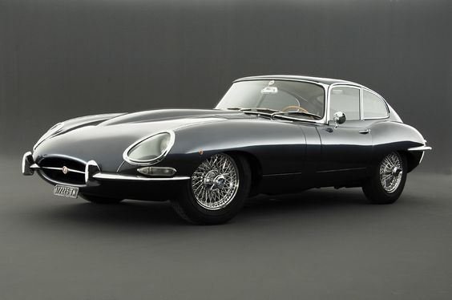

1. 1967 Cadillac Eldorado: The ’67 Eldorado is one of the great overlooked post-war American classics. A Bill Mitchell design triumph, it’s an ageless design that wouldn’t look out of place in a showroom today, particularly since Cadillac continues to revisit the ’67 Eldo rear end, one of the greatest ¾-views of all time.
2. 1954 Jeep CJ-5: The original Jeep CJ may well be the most knocked-off vehicle of all time, inspiring the likes of the Toyota FJ40 Land Cruiser, Nissan Patrol, Suzuki Samurai, etc., not to mention, of course, the current Jeep Wrangler.
3. Jaguar E-Type: The E-Type was one of the prime influences for the above-mentioned Toyota as well as the famous Datsun 240Z. Its extreme long hood, short rear deck design and covered headlight styling cues also continue to show up in Jaguar’s own products like the XK8 and the new F-Type. After all, it was by rival Enzo Ferrari’s own admission the most beautiful car in the world.
